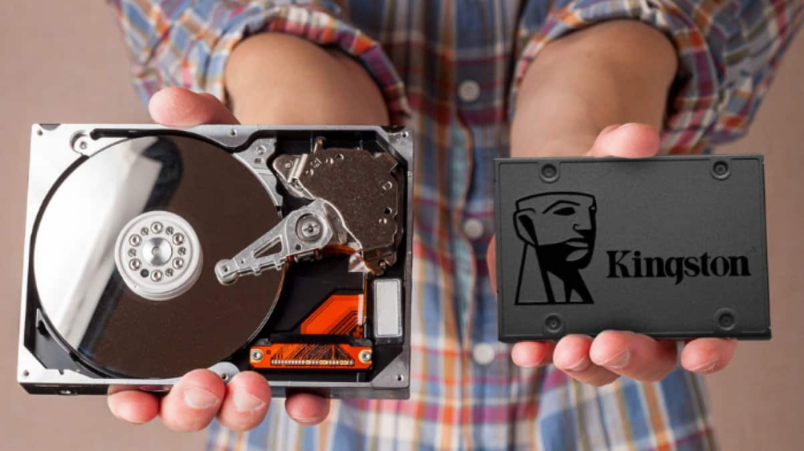

Vamos explorar detalhadamente as diferenças entre HD (Hard Disk Drive) e SSD (Solid State Drive) em diversos aspectos, como estrutura, desempenho, durabilidade, custo, consumo de energia e muito mais.
Estrutura e Funcionamento
HD (Hard Disk Drive)
- Componentes: Consiste em discos magnéticos rotativos (platters) e uma cabeça de leitura/escrita que se move fisicamente para acessar os dados.
- Funcionamento: Os dados são lidos/escritos magneticamente. A cabeça de leitura/escrita precisa se mover para a posição correta no disco para acessar ou gravar dados, o que pode levar tempo devido à rotação do disco e ao movimento da cabeça.
SSD (Solid State Drive)
- Componentes: Composto por chips de memória flash NAND, sem partes móveis.
- Funcionamento: Utiliza eletricidade para armazenar e acessar dados. Os dados podem ser acessados diretamente de qualquer local na memória, sem necessidade de movimento físico, resultando em tempos de acesso extremamente rápidos.
Desempenho
HD
- Velocidade de Leitura/Escrita: Geralmente mais lenta, com velocidades que variam entre 80-160 MB/s para discos de 7200 RPM.
- Latência: Maior devido ao tempo necessário para a cabeça de leitura/escrita se mover e para os discos girarem na posição correta.
- Fragmentação: A fragmentação pode degradar o desempenho ao longo do tempo, pois os dados podem ser espalhados fisicamente no disco.
SSD
- Velocidade de Leitura/Escrita: Significativamente mais rápida, com velocidades que podem variar entre 200-550 MB/s para SSDs SATA e muito mais para SSDs NVMe (até 3500 MB/s ou mais).
- Latência: Muito baixa, já que não há partes móveis. O tempo de acesso é quase instantâneo.
- Fragmentação: Não é afetado pela fragmentação, mantendo desempenho consistente ao longo do tempo.
Durabilidade e Confiabilidade
HD
- Durabilidade: Mais suscetível a danos físicos devido às partes móveis. Quedas ou impactos podem causar falhas mecânicas.
- Vida Útil: Pode durar vários anos, mas a falha mecânica é uma preocupação constante.
SSD
- Durabilidade: Mais resistente a choques e vibrações, pois não possui partes móveis.
- Vida Útil: Os SSDs têm um número limitado de ciclos de escrita, mas com a tecnologia atual, a durabilidade é geralmente suficiente para uso comum (alguns SSDs podem durar mais de 5-10 anos).
Custo
HD
- Preço por GB: Geralmente mais barato. Oferece mais armazenamento por um custo menor.
- Capacidades: Disponíveis em maiores capacidades, com discos comuns variando de 1 TB a 10 TB ou mais.
SSD
- Preço por GB: Mais caro. No entanto, os preços têm caído ao longo dos anos.
- Capacidades: Tipicamente menores em comparação aos HDs, com SSDs comuns variando de 250 GB a 2 TB, embora existam modelos de maior capacidade disponíveis.
Consumo de Energia e Calor
HD
- Consumo de Energia: Maior devido à necessidade de energia para girar os discos e mover a cabeça de leitura/escrita.
- Calor: Gera mais calor devido às partes móveis e ao consumo de energia.
SSD
- Consumo de Energia: Menor, uma vez que não há partes móveis e a eletricidade é usada apenas para a leitura/escrita de dados.
- Calor: Gera menos calor, o que é benéfico para dispositivos portáteis como laptops.
Aplicações
HD
- Melhor para: Armazenamento de grandes volumes de dados que não requerem acesso rápido (arquivos, backup, servidores de mídia).
- Uso comum: Desktops, servidores de armazenamento, sistemas de backup.
SSD
- Melhor para: Sistemas operacionais e aplicativos que requerem acesso rápido aos dados (computadores pessoais, laptops, consoles de jogos).
- Uso comum: Laptops, desktops de alta performance, dispositivos móveis, servidores de aplicações críticas.
Considerações Finais
A escolha entre HD e SSD depende das necessidades específicas de uso. Para armazenamento de grandes volumes de dados a um custo menor, os HDs ainda são vantajosos. Já para desempenho, rapidez e durabilidade, os SSDs são superiores. A combinação de ambos, usando um SSD para o sistema operacional e aplicativos e um HD para armazenamento de dados, é uma solução comum que aproveita o melhor de ambos os mundos.